Breakthroughs in Blockchain Fraud#
“Trust, but verify.” – Russian proverb, as quoted by Ronald Reagan, 1987
A cryptocurrency is digital money. Its record of who owns what is kept on a blockchain: a shared record, like a Python list of blocks of transactions. Many computers keep copies of it in step, and nobody can quietly edit an old entry. The rules by which those computers agree on one copy are called consensus. Cryptography is the mathematics of keeping and checking secrets.
Most of the money lost in cryptocurrencies is lost to fraud. Little of it is lost to broken cryptography or broken consensus. The usual culprits are:
Ponzi schemes, which pay old investors with new investors’ money;
pump-and-dumps, which push a price up and sell into the rush;
rug pulls, where the creators of a coin run off with the buyers’ money;
phishing, which tricks a victim into handing over control;
custodians that lose or lend their customers’ coins. A custodian is anyone who holds coins for someone else. The commonest is an exchange: a company that holds customers’ coins and lets them trade, as a bank holds deposits.
The schemes are old. The blockchain changes how they run and what evidence they leave. Anyone can read the blockchain’s ledger, its list of every transaction ever made. So fraud on it can be measured. Some honesty can even be proved: an exchange can prove what it holds and what it owes. This chronology follows both sides. It runs from Ponzi’s scheme and Benford’s law to proofs of solvency (proofs that an exchange holds at least what it owes), to contracts whose source code deceives the reader who checks it, and to the manipulation and phishing of the last few years.
A few terms recur on every page:
A key pair is a secret number, the private key, and a public number computed from it, the public key. The owner proves a payment is theirs with a digital signature: a value that only the private key could produce, but that anyone can check with the public key. An address is a short public name for a key, like an account number.
A hash function is like Python’s
hash(), but built so that nobody can find two inputs with the same output, or an input with a chosen output. SHA-256 is the standard one; its output is 256 bits. The best known way to find two inputs with the same SHA-256 output takes about \(2^{128}\) tries. That is far more than every computer on Earth could do in the age of the universe.A smart contract (or just contract) is a program stored on a blockchain at its own address. Anyone can call its functions by sending a transaction. It keeps its own storage, like an object’s attributes, and its own coins. Ethereum is the main blockchain for contracts, and ether is its currency. Solidity is the language most contracts are written in.
A token is a currency built on top of a blockchain by a contract. At heart it is a dict from address to balance, with functions to move balances. ERC-20 is Ethereum’s standard interface for tokens.
Several neighbours live elsewhere: the GovernMental Ponzi game and ERC-20’s approve race are in Breakthroughs in Smart Contracts, transaction malleability itself in Breakthroughs in Authenticated Data Structures, and flash loans, oracle manipulation and front-running in Breakthroughs in Blockchain Economics. Those pages explain their own terms.
The models in blockchainkit.fraud come in three kinds:
pure functions, whose output depends only on their input;
small seeded simulations, random but reproducible, as after
random.seed(0);contracts on
World, a Python model of Ethereum.
Solidity appears only as what a victim reads. Each scam contract’s example shows the source, then reproduces its behavior in Python. Exact conventions and model boundaries lists where the models depart from deployed systems.
1920 – Ponzi’s Scheme: Paying Old Investors with New Money#
Charles Ponzi promised Boston investors a 50% return in 45 days. The profit was supposed to come from international reply coupons: vouchers bought in one country and swapped for postage stamps in another. They were cheaper abroad, so he claimed to buy them there and redeem them in the United States. He bought almost none. Every payout came from later deposits.
Such a scheme keeps its promises only while new money grows fast enough. It is like paying off one credit card with another: it works until the next card is not big enough.
An investor deposits \(D\).
After \(\tau\) periods the investor is owed \((1 + r)D\).
The operator pays this from the deposits arriving that period. It first keeps a fraction \(s\) of them for itself.
Deposits grow by a fraction \(g\) per period. So today’s deposits are \((1 + g)^\tau D\).
The scheme keeps up exactly when
In words: what is left of today’s deposits, after the operator’s cut, must cover what is owed on the old deposit.
Ponzi’s own terms were one 45-day period, \(r = 0.5\), and nothing kept. So deposits had to grow by half every 45 days. Over a year, about eight periods, that is \(1.5^8 \approx 26\) times as much new money. No pool of investors grows like that for long.
Once growth falls below that rate, each payout is larger than the deposits that fund it. The cash runs out. The latest investors lose what they paid in.
Ponzi collapsed within eight months, in August 1920.
Implementation: blockchainkit.fraud.systems.ponzi.simulate_ponzi()
and blockchainkit.fraud.systems.ponzi.breakeven_growth(). Every
deposit is repaid once, after a fixed term, and nobody reinvests; Ponzi’s
investors mostly rolled their returns over, which delayed the collapse.
References: M. Zuckoff, Ponzi’s Scheme: The True Story of a Financial Legend, Random House (2005); M. Artzrouni, The mathematics of Ponzi schemes, Mathematical Social Sciences 58(2), 190–201 (2009).
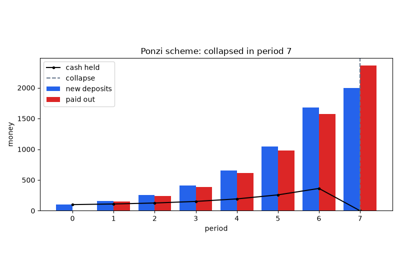
Ponzi’s scheme: paying old investors with new money (1920)
1938 – Benford’s Law: Detecting Fabricated Figures#
An auditor wants to spot invented figures without checking every one.
Before calculators, people multiplied using printed books of logarithms. Simon Newcomb noticed in 1881 that the first pages of these books were dirtier than the last. People looked up numbers starting with 1 more often than numbers starting with 9. Frank Benford tested the observation on 20,229 numbers, from river areas to street addresses, and found the same law. Take data spread over several orders of magnitude (powers of ten, say from 10 to 100,000). Then the leading digit is \(d\) with probability
That is 30.1% for 1 and only 4.6% for 9. The reason is logarithmic:
Write a positive number as \(x = 10^{n + f}\), where \(n\) is a whole number and \(f\), between 0 and 1, is the fractional part of \(\log_{10} x\) (
math.log10(x) % 1).The leading digit of \(x\) is \(d\) exactly when \(f\) lies between \(\log_{10} d\) and \(\log_{10}(d + 1)\).
That interval has length \(P(d)\).
If \(f\) is spread evenly between 0 and 1, each digit occurs in proportion to its interval.
When does that hold, and when does it fail?
Data covering several orders of magnitude has an evenly spread \(f\).
Products of many random factors, such as payments and prices, spread widely too. The logarithm of a product is a sum of many terms, and sums of many random terms spread out.
People inventing numbers spread the first digit far more evenly.
That difference is why auditors, following Mark Nigrini, test reported
figures against the law. It has been used to question the trading volumes
that cryptocurrency exchanges report. A test measures how far the observed
digit counts are from the law. Pearson’s chi-square statistic adds up
\((\text{observed} - \text{expected})^2 / \text{expected}\) over the nine
digits. Its p-value is the probability that honest data would give a value
at least that large by chance. A small p-value is evidence against the data.
Nigrini’s mean absolute deviation is the average gap
abs(observed_share - expected_share) over the digits.
Implementation: blockchainkit.fraud.systems.benford.benford_test(),
which returns Pearson’s chi-square statistic with its exact p-value
(blockchainkit.fraud.systems.benford.chi_square_survival()) and
Nigrini’s mean absolute deviation with his conformity bounds. Only the
first digit is tested; Nigrini’s practice adds second-digit and
first-two-digit tests.
References: F. Benford, The law of anomalous numbers, Proceedings of the American Philosophical Society 78(4), 551–572 (1938); S. Newcomb, Note on the frequency of use of the different digits in natural numbers, American Journal of Mathematics 4(1), 39–40 (1881). DOI; M. J. Nigrini, Benford’s Law, Wiley (2012).
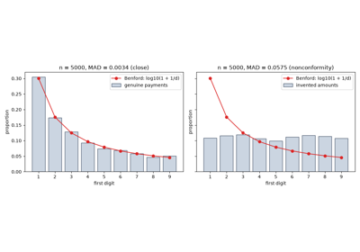
Benford’s law: detecting fabricated figures (1938)
2013 – Maxwell’s Merkle-Sum-Tree Proof of Reserves#
An exchange can prove that it holds coins. It moves them, or signs a message with their keys. That is a proof of reserves. But holdings mean nothing without the debts they must cover: the liabilities, what the exchange owes its customers.
Gregory Maxwell proposed that the exchange also prove its liabilities. The tool is a Merkle tree: a tree of hashes. Each leaf is the hash of one record, each parent is the hash of its two children, and the top hash, the root, depends on every leaf. Change any leaf and the root changes. It works like a checksum of a whole list that can also prove one item is in it. Maxwell’s version is a Merkle sum tree: every node also carries the sum of the balances below it.
The exchange puts each customer’s balance in a leaf.
It builds each parent from its children’s hashes \(h_L, h_R\) and sums \(s_L, s_R\), as below. The symbol \(\|\) joins byte strings, like
a + bonbytes.It publishes the root: a hash and a sum. The sum is the declared total liabilities.
The public compares that total with the reserves.
Each customer asks for a proof that its balance is counted. The proof is the sibling hashes and sums on the path from its leaf to the root. There are about \(\log_2 n\) of them for \(n\) customers: 20 for a million.
The customer recomputes the path and checks that it reaches the published root.
Each node is
In words: a node’s hash covers both children’s sums and hashes, and its sum is their total.
Because the sums are hashed, the root fixes every sum in the tree. The exchange cannot show different customers different totals.
Leaving customers out lowers the declared total. But those left out can notice. Suppose each customer checks independently with probability \(f\). Then cheating \(k\) of them goes unnoticed with probability \((1 - f)^k\). With \(f = 0.05\) and \(k = 100\) that is about 0.006.
Adding a fake account with a negative balance would cancel real ones. But customers reject any negative sibling sum on their path. So such an account is caught by those whose proofs include it.
These are the only two ways to lower the declared total.
Implementation: blockchainkit.fraud.utils.merkle_sum.MerkleSumTree,
blockchainkit.fraud.utils.merkle_sum.verify_sum_proof(),
blockchainkit.fraud.systems.reserves.liability_tree(),
blockchainkit.fraud.systems.reserves.audit() and
blockchainkit.fraud.systems.reserves.detection_probability(). Leaves
hash a label, a balance and a salt with SHA-256 and canonical JSON; the
reserves side, signing with the exchange’s keys, is not modelled.
References: Z. Wilcox, Proving your bitcoin reserves, Bitcoin Forum (February 2014), describing Maxwell’s 2013 proposal; Y. Ji and K. Chalkias, Generalized proof of liabilities, ACM CCS 2021.
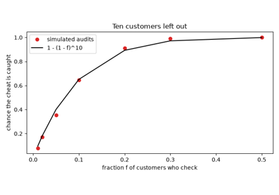
Maxwell’s Merkle-sum-tree proof of reserves (2013)
2014 – The Mt. Gox Collapse and the Malleability Excuse#
On 7 February 2014 Mt. Gox, the largest bitcoin exchange, halted withdrawals. It blamed transaction malleability. Each bitcoin transaction is named by its txid, a hash of the whole transaction, signature included. Anyone could re-encode a transaction’s signature in a different but still valid form, without the private key. That changes the bytes, so it changes the txid. But the payment is the same.
The claimed attack went like this:
The exchange signs a withdrawal \(w\), broadcasts it (sends it to the network), and records \(\mathrm{txid}(w)\).
An attacker sees it in flight, alters the signature’s encoding, and broadcasts the copy.
Miners confirm the copy, that is, put it in a block on the chain. The coins arrive. The original is now invalid, since it spends the same coins.
The exchange looks for \(\mathrm{txid}(w)\), does not find it, and believes the withdrawal failed.
The exchange pays again.
Within three weeks it filed for bankruptcy, about 850,000 bitcoins short. An exchange losing to malleability loses exactly the withdrawals it re-sends: those whose original txid never appears on the chain.
In words: add up the amounts \(a_w\) of every withdrawal whose original txid is missing from the chain.
The excuse failed on the evidence:
Each such loss leaves a trace. A malleated copy of the withdrawal must have been broadcast and confirmed, and broadcasts are public.
Someone was watching. Decker and Wattenhofer had been recording the network’s transactions and counted the malleated ones. Before the announcement they could account for at most 386 bitcoins. That is under 0.05% of the shortfall.
The coins had been leaving for years. The excuse covered a long insolvency: owing more than it held.
The lasting fix was segregated witness (SegWit), activated in 2017. It computes a transaction’s txid without its signature, so altering the signature no longer changes it. This package signs with Schnorr signatures, a different signature scheme.
Implementation: blockchainkit.fraud.systems.custody.reissue_missing()
on Transaction.
Bitcoin’s malleation re-encoded a signature without its key; here a
second signature by the exchange over the same payment stands in for it,
since the teaching Schnorr signatures cannot be altered by a third party.
Tracking by unsigned_id, like segregated witness’s txid, loses nothing.
References: C. Decker and R. Wattenhofer, Bitcoin transaction malleability and MtGox, ESORICS 2014, LNCS 8713, 313–326. DOI.
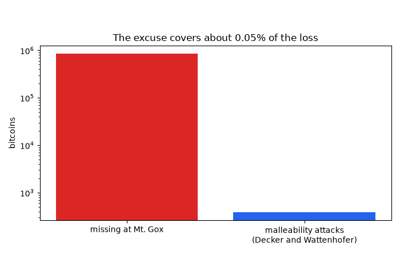
The Mt. Gox collapse and the malleability excuse (2014)
2015 – Provisions: Privacy-Preserving Proofs of Solvency#
Maxwell’s proof reveals the total liabilities. A proof of reserves reveals which addresses the exchange owns. Few exchanges were willing to publish either.
Dagher, Bünz, Bonneau, Clark and Boneh hid both behind commitments. A commitment is like a sealed envelope. You fix a value now and keep it hidden. Later you cannot change it. They used Pedersen commitments:
\(C(v, r) = g^v h^r \bmod p\), in Python
pow(g, v, p) * pow(h, r, p) % p. Here \(p\) is a large prime, and \(g\) and \(h\) are fixed public numbers.The random \(r\), the blinding factor, hides \(v\). Every value is equally consistent with what you see.
Nobody knows the power \(x\) with \(h = g^x\). Finding it is the discrete logarithm problem. That is what stops the committer from opening \(C\) to a different value.
Multiplying commitments adds the hidden values: \(C(a, r)\,C(b, t) = C(a + b, r + t)\). Dividing subtracts them. The values add modulo a large number \(q\), so a negative result wraps around to a huge positive one.
They also used zero-knowledge proofs. Such a proof convinces a checker that a statement is true, and reveals nothing beyond that.
The public sees a large set of addresses. Address \(i\) has public balance \(b_i\), which anyone can read on the chain.
For each address the exchange commits to \(s_i b_i\). Here \(s_i\) is 1 if it owns the address and 0 if not. So the set hides which addresses are its own.
It commits to every customer balance \(\ell_j\), with blinding factor \(t_j\). It sends each customer that blinding factor privately.
Each customer opens its own commitment and checks its balance.
Anyone multiplies the asset commitments and divides by the liability commitments.
The exchange attaches zero-knowledge proofs (below) that close the remaining gaps.
Step 5 gives
In words: the product of the asset commitments, divided by the product of the liability commitments, is a commitment to the surplus, reserves minus liabilities.
Commitments alone would let the exchange cheat. The zero-knowledge proofs close each gap:
Each asset commitment holds 0 or the public balance. An OR proof shows “this holds 0, or this holds \(b_i\)” without saying which. So assets cannot be inflated.
Every liability and the surplus lie in a range \([0, 2^n)\). So no fake negative balance cancels real ones, and the surplus is not negative (a negative one would wrap around to a huge number, outside the range).
A range proof commits to each bit of the number and proves each bit is 0 or 1. The bit commitments combine into a commitment to the number, as
sum(bit << k for k, bit in enumerate(bits))rebuilds an int.Nothing else is revealed.
The binding rests on the discrete logarithm being hard to find. In the 62-bit group used here, a search with a lookup table (baby-step giant-step) takes about \(2^{31}\) steps, within reach of one computer. Real systems use groups where the best known attack takes about \(2^{128}\) steps.
Implementation: blockchainkit.fraud.systems.provisions.SolvencyProver
and blockchainkit.fraud.systems.provisions.verify_solvency(), with
Cramer-Damgård-Schoenmakers OR proofs
(blockchainkit.fraud.systems.provisions.prove_either()) and bitwise
range proofs (blockchainkit.fraud.systems.provisions.prove_range())
in the 62-bit teaching group. Provisions also proves knowledge of each
owned address’s key and, in its third protocol, that no two exchanges
claim the same address; neither is modelled here.
References: G. G. Dagher, B. Bünz, J. Bonneau, J. Clark and D. Boneh, Provisions: Privacy-preserving proofs of solvency for Bitcoin exchanges, ACM CCS 2015, 720–731. DOI; R. Cramer, I. Damgård and B. Schoenmakers, Proofs of partial knowledge and simplified design of witness hiding protocols, CRYPTO 1994, LNCS 839, 174–187. DOI.
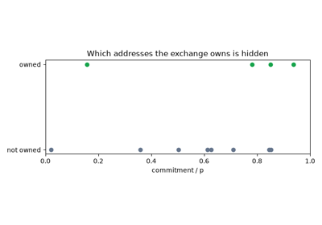
Provisions: privacy-preserving proofs of solvency (2015)
2016 – Verified Source Code, and Why a Verified Source Can Still Deceive#
Contracts are deployed as bytecode: low-level instructions for Ethereum’s
virtual machine, the EVM, much as Python compiles source to .pyc
files. Nobody can read bytecode easily. Block explorers, websites that
display the blockchain, let authors publish the source and verify it. The
explorer recompiles the source and compares the result with the code at the
address. Solidity’s metadata hash, added in version 0.4.7 in December
2016, records the compiler version and settings so that the match is exact.
Users came to read the “verified” badge as “safe”. It certifies only which code sits at one address. A proxy shows the gap:
A proxy is a contract that forwards every call to another contract, the implementation.
It keeps the implementation’s address in its storage, in a numbered slot. Its admin may change that address at any time.
It forwards with
DELEGATECALL, which runs the other contract’s code on the proxy’s own storage and coins. It is like calling a function from another module but passing your ownself.
The attack:
The admin deploys a proxy and a harmless implementation, and verifies both.
Users read the source, trust it, and deposit.
The admin writes a new implementation address into the proxy’s slot.
Every later call runs the new code, which can, for example, take any balance.
So the behavior that runs is
In words: the proxy’s code, combined with whatever code sits at the address stored in its slot right now. Only the first factor was verified. The admin can swap the second after users have read the source. The same holds for code reached through:
a constructor argument (the constructor runs once at deployment, like
__init__);an external library;
a parent contract the reader skips.
Implementation: blockchainkit.fraud.systems.verification.verify_source()
compares the class at an address, and
blockchainkit.fraud.systems.verification.effective_code() follows an
EIP1967Proxy;
SeizableToken is the
upgrade that lets the owner take any balance. There is no compiler and no
bytecode: code is compared by class identity.
References: Solidity documentation, Contract metadata (introduced in version 0.4.7, 2016); P. Murray, N. Welch and J. Messerman, EIP-1967: Proxy storage slots (2019). URL.
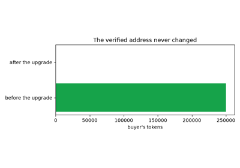
Verified source code, and why a verified source can still deceive (2016)
2017 – Bartoletti et al.: Dissecting Ponzi Schemes on Ethereum#
Ponzi schemes moved onto Ethereum as contracts. There the rules are written in code that anyone can read, and every payment is on the public ledger.
Bartoletti, Carta, Cimoli and Saia collected 184 Ponzi schemes running as Ethereum contracts. Most had public source code. They classified them by how they pay:
chain-shaped: each deposit joins a queue, like a
collections.deque. It is paid a multiple of itself out of later deposits, in order of arrival;tree-shaped: each newcomer’s money pays the investor who referred them;
waterfall: each deposit is poured down the list of earlier investors, starting from the first;
handover: each newcomer’s payment goes to the investor just before.
A chain scheme works like this:
An investor deposits; the deposit joins the back of the queue.
The owner takes a fee, a fraction \(f\) of the deposit.
The rest goes to the investor at the front of the queue.
Once that investor has received \(m\) times their deposit, they leave the queue.
All payouts come from the \(1 - f\) of deposits left after the fee. With \(N\) equal deposits, at most \((1 - f)N/m\) investors can be paid. So at least a fraction
of the investors is unpaid when deposits stop. For example, with a 10% fee and a promise to double (\(f = 0.1\), \(m = 2\)), at least 55% of investors are never paid.
The transactions show the mechanism: payouts leave in the same transactions as newer deposits.
Most investors end below what they paid.
The scale: such schemes had taken about 10 million dollars from thousands of users.
Later detectors used classifiers, models that learn to label a contract “Ponzi” or “not Ponzi” from examples.
Implementation: blockchainkit.fraud.systems.ponzi.ChainPonzi,
with blockchainkit.fraud.systems.ponzi.value_flows(), which lists
the transfers a block explorer shows, and
blockchainkit.fraud.systems.ponzi.ponzi_features(). The features are
two of the simplest; later detectors trained classifiers on dozens of
transaction and bytecode features.
References: M. Bartoletti, S. Carta, T. Cimoli and R. Saia, Dissecting Ponzi schemes on Ethereum: identification, analysis, and impact, Future Generation Computer Systems 102, 259–277 (2020); arXiv:1703.03779 (2017). DOI.
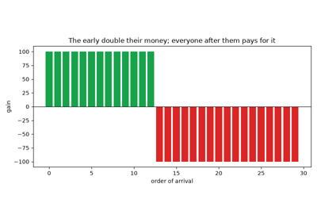
Bartoletti et al.: dissecting Ponzi schemes on Ethereum (2017)
2017-2018 – ICO Exit Scams and the DAICO#
An initial coin offering (ICO) sells a new token for ether to fund a project. It is like crowdfunding in which backers receive tokens. ICOs raised billions of dollars in 2017 for projects that existed only as white papers, documents describing a plan. Nothing tied the team to the money. An exit scam takes the proceeds and disappears. In December 2017 the SEC’s new Cyber Unit got an emergency freeze of the PlexCoin sale. Its promoters had promised a 1,354% return in under a month.
Vitalik Buterin’s DAICO proposal of January 2018 limits what a team can take:
Contributors send ether to the sale contract and receive tokens.
The contract keeps the ether.
The team may withdraw it only at a capped tap rate \(\tau\), in ether per second.
Contributors can vote to refund the rest. If the vote passes, each contributor gets a share in proportion to their tokens.
Since the team can withdraw no faster than the tap, a team that vanishes after time \(t\) takes at most
In words: the tap rate times the time elapsed, or everything raised if that is smaller.
Contributors recover the remainder in proportion to their tokens.
The longer the team stays, the more it can take, so contributors must keep watching and vote in time.
Implementation: blockchainkit.fraud.systems.token_sales.TokenSale,
with tap = 0 for an ordinary sale. Tokens are a per-contributor count
rather than an ERC-20; the tap can only be set at deployment, and a refund
needs more than half of the tokens, where Buterin’s design also lets
holders vote to raise the tap.
References: V. Buterin, Explanation of DAICOs, Ethereum Research forum (January 2018). URL; U.S. Securities and Exchange Commission, SEC Emergency Action Halts ICO Scam, press release (4 December 2017).
2018 – Gandal et al.: Price Manipulation in the Bitcoin Ecosystem#
Between February and November 2013, two accounts on Mt. Gox, later dubbed the Markus and Willy bots, bought about 600,000 bitcoins without paying for them. The exchange credited them with dollars it did not have. Over the same months the price rose from about 150 to over 1,000 dollars.
Gandal, Hamrick, Moore and Oberman used the leaked Mt. Gox trade records. They compared the price change on days the bots traded with the other days: about 4% a day against a slight fall.
The idea: in a thin market, one with few traders, buying moves the price. A simple model of daily prices \(p_t\):
\(q_t\) is the net purchase on day \(t\): coins bought minus coins sold.
\(\lambda\) is the price impact: how far the log price moves per coin bought.
\(\sigma \varepsilon_t\) is random noise. \(\varepsilon_t\) is a standard normal random number (
random.gauss(0, 1)) and \(\sigma\) sets its size.
In words: each day the log of the price moves by an amount proportional to the net buying, plus noise. A change in log price is close to a percentage change, so this is the day’s return.
A genuine buyer is limited by its money. A buyer who need not pay for \(q_t\) can raise the price as far as it likes.
The noise averages out across days. So the bots’ effect shows up as a higher mean return on the days they traded, and none on the others. That is the pattern Gandal et al. found.
This model is a random walk: each day adds a random step. Because it is the logarithm that walks, the price itself is log-normal. The \(\lambda q_t\) term comes from Albert Kyle’s 1985 model of trading. To regress returns on activity is to fit a line through them; controls are other factors included in the fit.
Implementation: blockchainkit.fraud.systems.manipulation.simulate_bot_market()
and blockchainkit.fraud.systems.manipulation.return_by_activity().
The price is a log-normal random walk with Kyle’s linear impact; Gandal et
al. regressed actual daily returns on the bots’ activity with controls.
References: N. Gandal, J. T. Hamrick, T. Moore and T. Oberman, Price manipulation in the Bitcoin ecosystem, Journal of Monetary Economics 95, 86–96 (2018). DOI.
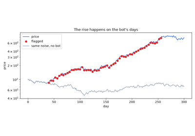
Gandal et al.: price manipulation in the Bitcoin ecosystem, the Willy bot (2018)
2018 – BitConnect and Lending-Platform Ponzis#
BitConnect took bitcoin deposits into a “lending program”. It claimed to earn around 1% a day from a trading bot. It also paid recruiters commissions on the investors they brought in, and on those investors’ recruits, several levels down. Nothing was traded. Interest and withdrawals came from new deposits.
The trick is compound interest: interest is paid on interest. Each day \(t\):
Every credited balance grows by the daily rate \(i\).
New deposits \(D_t\) are added to balances and to the cash.
Withdrawals \(W_t\) are taken from balances and from the cash.
So the liabilities grow as
In words: what is owed grows by the interest plus the net deposits. At 1% a day, a balance multiplies by about 38 in a year. Meanwhile the cash grows only by \(D_t - W_t\).
A balance left for a year is owed 38 times over.
The gap widens every day. What is owed outruns what is held, and only ever-faster deposits can hide it.
The end: in January 2018 the Texas and North Carolina securities regulators ordered it to stop. Deposits dried up, and the lending platform closed on 16 January. The SEC later charged its founder and promoters with a fraud of about two billion dollars.
Implementation: blockchainkit.fraud.systems.ponzi.simulate_lending_ponzi()
and blockchainkit.fraud.systems.ponzi.referral_commissions().
Withdrawals are a fixed fraction of balances each day and commissions are
paid at once, in the scheme’s own currency rather than in a token whose
price it also propped up.
References: U.S. Securities and Exchange Commission, SEC Charges Global Crypto Lending Platform and Top Executives in $2 Billion Fraud, press release (1 September 2021); Texas State Securities Board, emergency cease and desist order against BitConnect (4 January 2018).
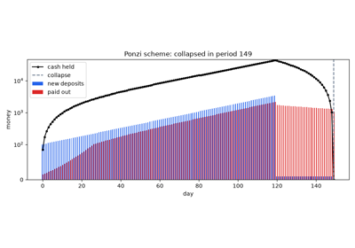
BitConnect and lending-platform Ponzis (2018)
2019 – Torres et al.: Honeypots That Trap Would-Be Thieves#
A honeypot is a contract that holds ether and seems to leak it. It targets anyone who reads its source closely enough to spot a flaw.
The creator deploys the contract with some ether as bait.
A reader studies the source and spots what looks like a flaw.
The reader sends ether to exploit it.
The flaw is a trap. The ether stays in the contract, where only its creator can reach it.
Torres, Steichen and State found 690 honeypots and classified eight techniques. Four rest on the exact rules by which the EVM runs code, or on what the explorer shows:
Balance disorder. The source seems to pay anyone who sends at least the contract’s balance \(b\). But by the time the check runs,
this.balancealready includes the sender’s \(v\). So the condition becomes \(v \ge b + v\), which fails for any bait \(b > 0\).Hidden state update. The contract is changed through a call carrying no ether. The explorer did not list such calls, so the reader judges stale state.
Hidden transfer. Whitespace pushes a line of code past the right edge of the explorer’s code view, out of sight.
Straw man contract. The constructor is given an address holding different code from the source shown.
The other four are quirks of Solidity:
Inheritance disorder. A child contract’s
owneris a different variable from its parent’s.Uninitialised storage struct. A contract’s storage is a numbered array of slots. A local struct declared without the
memorykeyword points at slot 0 and overwrites what is stored there.Type deduction overflow. A loop counter declared with
varbecomes auint8, an 8-bit number from 0 to 255. So it wraps around, likei = (i + 1) % 256.Skipped empty string literal. Compilers before 0.4.12 dropped an empty string
""argument and shifted the others into the wrong places.
Their tool, HoneyBadger, finds them by symbolic execution of the bytecode. It runs the program with unknown inputs kept as symbols. Along each path it records the conditions those inputs must meet. Then it asks whether any input could really reach a payout.
Implementation: the contracts in blockchainkit.fraud.systems.honeypots.
Three of the EVM and explorer techniques are modelled directly:
MultiplicatorX3,
GiftBox with
explorer_view(), and
PrivateBank with
TrapLog. The Solidity quirks
are reproduced by their effect only, with no compiler or parser:
KingOfTheHill keeps two
owner fields, GuessNumber
writes to slots 0 and 1, ForTest
counts modulo 256, and
DividendDistributor passes
the shifted arguments. The hidden transfer, a matter of how the explorer
lays out text, is not shown.
References: C. F. Torres, M. Steichen and R. State, The art of the scam: Demystifying honeypots in Ethereum smart contracts, USENIX Security 2019, 1591–1607.
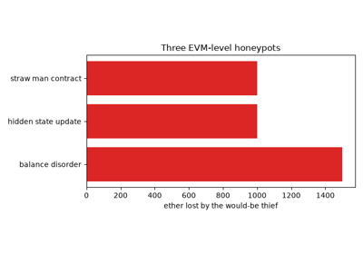
Torres et al.: honeypot contracts that trap would-be thieves (2019)
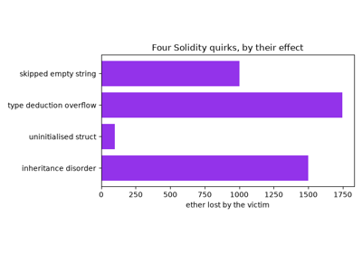
Torres et al.: the Solidity quirks honeypots exploit (2019)
2019 – Xu and Livshits: The Anatomy of a Pump-and-Dump#
A pump-and-dump runs in a chat group, often on Telegram, with tens of thousands of members:
The organizers quietly buy a coin.
They announce the coin to the group at a set minute.
Members rush to buy. The price jumps within seconds.
The organizers sell into the rush.
The price falls back, and the late buyers lose.
Xu and Livshits studied 412 such pumps between June 2018 and February 2019. They measured who gained. They also predicted which coin would be pumped from its market’s features.
Why must someone lose? Take a constant-product market: a pool holding \(x\) coins and \(y\) of the quote currency, the currency prices are given in. Every trade keeps \(xy\) fixed.
A buyer paying \(\Delta y\) gets \(x\,\Delta y / (y + \Delta y)\) coins. (Solve \((x - \Delta x)(y + \Delta y) = xy\) for \(\Delta x\).)
Each purchase raises the price for the next buyer.
A fee-free pool neither gains nor loses on a round trip. Its product \(xy = k\) never changes, so \(y = k/x\) depends only on \(x\). Once every coin bought has been sold back, \(x\) and \(y\) are where they started.
So the traders’ profits sum to zero. Whoever buys early and sells first, above all the organizers, wins exactly what the late buyers lose:
In words: the organizers’ profit plus every other trader’s profit is about zero. It is only approximately zero because some late buyers are still holding coins.
The pump leaves a spike in both price and volume far above their recent averages, which simple anomaly rules catch.
The pumps Xu and Livshits studied ran on centralized exchanges, run by a company. These match trades through order books: lists of buy and sell offers. A random forest is a kind of classifier built from many decision trees.
Implementation: blockchainkit.fraud.systems.manipulation.simulate_pump_and_dump()
on a fee-free constant-product market, and
blockchainkit.fraud.systems.manipulation.detect_pumps(), Kamps and
Kleinberg’s anomaly rule on hourly closes. The pumps Xu and Livshits
studied ran on centralized exchanges’ order books, and their prediction
model, a random forest, is not reproduced.
References: J. Xu and B. Livshits, The anatomy of a cryptocurrency pump-and-dump scheme, USENIX Security 2019, 1609–1625; J. Kamps and B. Kleinberg, To the moon: defining and detecting cryptocurrency pump-and-dumps, Crime Science 7, 18 (2018). DOI.
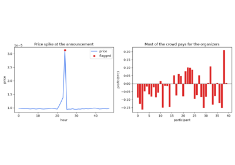
Xu and Livshits: the anatomy of a cryptocurrency pump-and-dump (2019)
2022 – Von Wachter et al.: Wash Trading in NFT Markets#
An NFT (non-fungible token) is a token whose units are each unique. Instead of a dict from address to balance, it keeps a dict from token ID to owner. NFTs are used for digital art and collectibles.
A wash trade is a sale between parties who are really one. On NFT markets it serves two ends:
faking a price history for a token, so that it looks valuable;
earning trading rewards. In early 2022 the LooksRare market paid its own token to traders in proportion to their volume. Most of that volume was washed.
Von Wachter, Jensen, Regner and Ross looked for the shape such trading leaves on a public ledger:
Treat each account as a node of a graph, and each sale as an edge from seller to buyer.
Follow each token through its sales.
Flag any token that passes through a few accounts and returns to one that held it before.
That shape is a cycle:
In words: the token goes from account \(a_1\) through \(\ell - 1\) other accounts and back to \(a_1\).
A cycle changes nobody’s holdings, only the volume.
The findings: suspicious activity in a few percent of the collections they studied, accounting for a far larger share of their volume.
Their method also used strongly connected components: groups of accounts in which each can reach every other along sales. Common funding means accounts whose ether came from the same source.
Implementation: blockchainkit.fraud.systems.wash_trading.find_wash_trades()
flags every trade on a cycle of at most max_length sales and groups
the accounts into rings as the components of a
Graph;
blockchainkit.fraud.systems.wash_trading.simulate_nft_market()
supplies a market with a known ring. Von Wachter et al. used the strongly
connected components of each token’s trade graph, together with common
funding of the accounts, which is not modelled.
References: V. von Wachter, J. R. Jensen, F. Regner and O. Ross, NFT wash trading: Quantifying suspicious behaviour in NFT markets, Financial Cryptography and Data Security workshops (2022); arXiv:2202.03866.
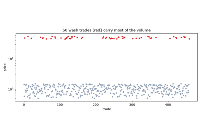
Von Wachter et al.: wash trading in NFT markets (2022)
2022 – Approval (“Ice”) Phishing on ERC-20 Allowances#
An ERC-20 token’s approve function lets a spender move the owner’s tokens later without asking again.
The token stores the limit as an allowance, like a nested dict
allowance[owner][spender]. The spender then calls transferFrom to
move up to that amount. Exchanges ask once for an unlimited allowance, to
spare their users a transaction per trade.
In February 2022 Microsoft named the attack that exploits this habit ice phishing:
The attacker builds a fake airdrop (free token giveaway) or mint page.
The page asks the victim to approve the attacker’s contract. The victim signs and sends the approval.
Whenever the attacker likes, months later if need be, its contract calls
transferFromand empties the wallet.
No key is stolen. Each token can be taken up to the total its spenders are allowed, but no more than the wallet holds. So what a wallet stands to lose is
In words: for each token, the smaller of the balance and the total allowance, added up over all tokens.
Revoking an approval, setting it to 0, removes that spender’s share.
Approvals are public. Each
approvewrites anApprovalevent, a log entry that anyone can read later. So a wallet’s standing allowances can be listed.A newer route,
permit, grants an approval by signing a message rather than sending a transaction.
Implementation: blockchainkit.fraud.systems.phishing.Drainer,
blockchainkit.fraud.systems.phishing.open_approvals(), which reads a
wallet’s standing allowances from its Approval events, and
blockchainkit.fraud.systems.phishing.allowance_exposure(), on
ERC20. Signed permit
approvals (EIP-2612), the commoner vector since, are not modelled.
References: Microsoft 365 Defender Research Team, “Ice phishing” on the blockchain, Microsoft Security Blog (16 February 2022). URL.
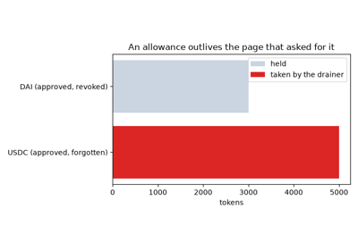
Approval (“ice”) phishing on ERC-20 allowances (2022)
2022 – FTX, Commingled Customer Funds, and Proof of Liabilities#
In November 2022 FTX, one of the largest exchanges, could not meet a rush of withdrawals and filed for bankruptcy. Its affiliated trading firm was Alameda Research. FTX had a liquidation engine: a system that automatically sells a trader’s positions when their balance runs too low. Alameda was exempt from it and allowed a negative balance. It had spent billions of dollars of customer deposits. The books still showed every customer’s balance; the coins were gone.
A rush of withdrawals is a run, as on a bank. Write \(R\) for the reserves and \(L\) for the liabilities. If the reserve ratio \(R/L\) is below one, the run goes like this:
Customers withdraw one after another.
Each is paid in full while the reserves last.
When the reserves run out, the rest get nothing.
In words: the total paid out is the reserves, a fraction \(\rho\) of what was owed.
Solvency depends on \(R\) and \(L\) together.
A proof of reserves shows only \(R\). FTX’s reserves were real and large. The shortfall appears only beside the liabilities.
The response: weeks after the collapse, exchanges began publishing Merkle-sum proofs of liabilities beside their reserves.
FTX also issued its own token, FTT. Alameda pledged it as collateral: assets handed over as security for a loan.
Implementation: blockchainkit.fraud.systems.custody.Custodian,
whose operator may lend deposits to an affiliate up to a credit line, with
blockchainkit.fraud.systems.reserves.liability_tree() and
blockchainkit.fraud.systems.reserves.reserve_ratio(). Customers hold
ether only; FTX’s books mixed dozens of assets and its own FTT token, which
Alameda used as collateral.
References: J. J. Ray III, First Interim Report of John J. Ray III to the Independent Directors on Control Failures at the FTX Exchanges, In re FTX Trading Ltd., No. 22-11068 (Bankr. D. Del., 9 April 2023).
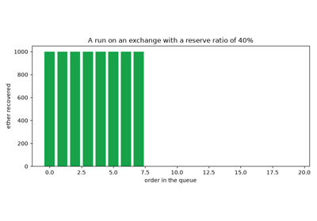
FTX, commingled customer funds, and proof of liabilities (2022)
2022-2023 – Address Poisoning with Look-Alike Addresses#
An Ethereum address is 40 hexadecimal digits (0-9 and a-f), like
0x52908400098527886E0F7030069857D2E4169EE7. Wallets, the apps that hold
keys and send payments, show only the first and last few digits. From late
2022, poisoners exploited this:
The poisoner watches the chain for a payment from a payer to a payee.
It grinds out a look-alike address: a brute-force loop over random candidates until one matches the ends of the payee’s address.
It sends the payer a worthless transfer from the look-alike. Now the look-alike sits in the payer’s history next to the real one.
The payer copies an address from the history for the next payment, picks the look-alike, and pays the poisoner.
Tsuchiya, Dong, Soska and Christin measured hundreds of millions of such attempts on Ethereum and BNB Chain.
The attack is cheap because the poisoner need match only the digits users look at. Each random candidate matches \(k\) chosen hex digits with probability \(16^{-k}\). So the number of candidates to try is geometric, like the number of rolls of a \(16^k\)-sided die until a chosen face comes up. Its mean is
In words: on average the poisoner tries \(16^k\) candidates.
Eight digits, as a hurried user checks, need about \(16^8 \approx 4.3\) billion trials: seconds on a graphics card.
All 40 digits would need \(16^{40} = 2^{160}\) trials. That is far more than every computer on Earth could do in the age of the universe.
So the defence is to check the whole address, not just its ends.
Implementation: blockchainkit.fraud.systems.poisoning.grind_lookalike()
over hash-derived candidates
(blockchainkit.fraud.systems.poisoning.candidate_address()),
blockchainkit.fraud.systems.poisoning.looks_alike() and
blockchainkit.fraud.systems.poisoning.poisoning_suspects(). Candidates
are hashes rather than addresses derived from key pairs, and a few hex
digits replace the eight or more that real poisoners match.
References: T. Tsuchiya, J.-D. Dong, K. Soska and N. Christin, Blockchain address poisoning, USENIX Security 2025; arXiv:2501.16681.
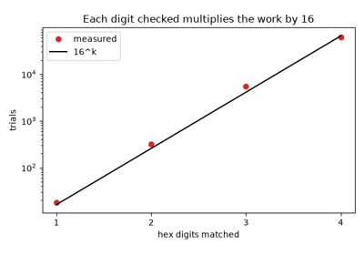
Address poisoning with look-alike addresses (2022-2023)